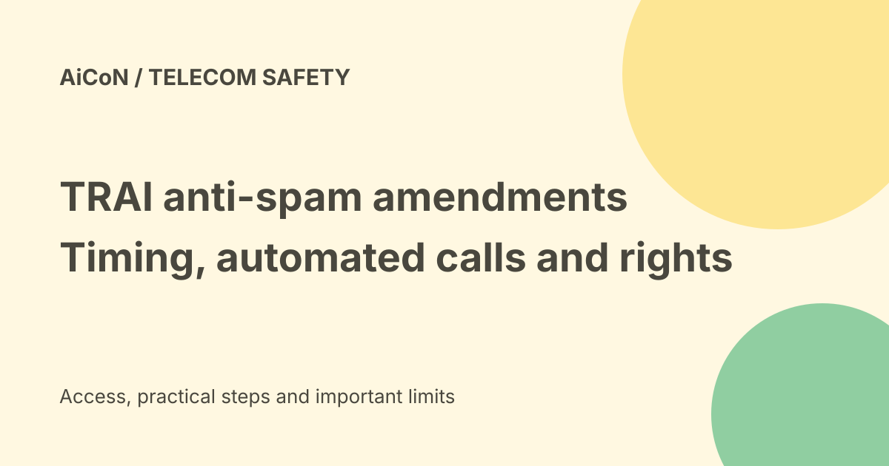

TRAI AI spam-call rules: start dates, robocalls and complaints
TRAI notified new anti-spam amendments on 18 September 2026. They add AI-based detection and rules for automated calls. Notification is not the same as immediate effect: the regulation provides 30,60 and 90-day commencement periods after Gazette publication.

What changed?
TRAI's third amendment changes the Telecom Commercial Communications Customer Preference Regulations,2018. It targets unsolicited commercial communications, often called UCC. The official press release describes stronger detection, sender accountability, automated-call rules and consumer appeals.
An AI flag is a reason for investigation, not proof that every unknown caller is a scammer. A registered business call can still be unwanted, and a familiar-looking number is not proof that a caller is genuine.
When do the amendments start?
The signed notification is dated 18 September 2026. Its commencement clause says most provisions take effect 30 days after publication in the Official Gazette. Regulations 4,6,8(a) and 18 take 60 days; amendments in its Annexure take 90 days.
The earlier post said the rules were effective from 18 September. That is too broad. Publication date, the particular provision and operator implementation need separate checks. We do not calculate final operative dates from the notification date alone.
Businesses should have their telecom provider or legal adviser map the specific duties they use to the applicable commencement clause. This is an explanation of the published rules, not legal advice or a verified compliance rollout.
AI detection and the five-number test
The press release requires operators to use AI/ML systems to identify calling numbers with a high probability of sending UCC and share the intelligence across operators. ML means machine learning.
If five or more calling-line identifiers associated with one sender are flagged within ten days, operators investigate and apply graded action. The listed actions include KYC re-verification, physical verification, outgoing-service bars and disconnection for repeated misuse. This is not five calls from one number.
Automated calls and the 5-paise charge
A2P means application-to-person. The amendment covers calls initiated by software without direct human dialling, including autodiallers, robocalls and prerecorded or artificial voices. Entities using those calls must declare that use and the calling numbers to their telecom provider in advance.
Undeclared A2P calls are treated as UCC under the amendment. The rule does not mean every AI voice call is banned.
The termination charge can be up toRs 0.05 per minute, levied by the terminating operator on the originating operator. It is not a new charge on everyone receiving a call. A2P calls using designated regulated-commercial series and Authority-authorised calls have exemptions.
Complaints and appeals
The new corroborated-action threshold is three or more unique complaints in ten days plus an AI/ML flag on the sender's calling number. Three complaints alone are not the complete stated condition.
The official release adds an appeal against resolution of a UCC complaint within 15 days, using channels including the TRAI DND app, provider app or portal, or call/SMS to 1909. Check the current operator route and applicable start date before relying on a new appeal workflow.
Keep the call time, number and complaint reference. Do not send money, passwords or OTPs to a caller claiming that a spam complaint requires them.
Number series and blocking rights
The release names 140 xx promotional and 1600 xx/1601 xx service or transactional series. Call-management apps must not blanket-block, filter or spam-tag designated series. The release explicitly says individual consumers keep the freedom to block or filter calls on their own devices.
This is narrower than saying legitimate-series calls cannot be reported or that users cannot block them. The rule regulates app-level blanket treatment, while consumer choices remain. Call-management apps offering UCC reporting must share complaint data with telecom providers under the stated framework.
Other limits and a careful response
A customer's product or service inquiry supports commercial follow-up for only seven days under the described amendment. Consent, sender registration and content-template rules have their own detail; a short news post is not a substitute for the full regulation.
- Use your provider's current spam-reporting instructions.
- Save the complaint reference and relevant call details.
- Check a claimed business through a known official contact, not a number supplied by the caller.
- Keep device-level blocking choices separate from regulator complaints.
- For business calling, review declarations, number-series and consent duties before using automation.
No complaint, appeal, carrier account or blocking setting was changed for this guide.
Frequently asked questions
Did every rule begin on 18 September?
No. The regulation specifies phased commencement after Gazette publication.
Do I pay 5 paise to receive a call?
The stated charge is between operators for qualifying A2P traffic, with exemptions.
Can I still block calls myself?
The release expressly preserves individual device-level blocking and filtering.
Will AI stop all spam?
No such result was tested or guaranteed here.
What changed since the earlier post?
This guide corrects immediate-effect wording, explains both number/complaint thresholds and separates the app-level series rule from individual blocking rights. It keeps the carrier charge distinct from a consumer bill.
Sources: Official regulation and commencement · Official press release · PIB official summary. Checked 8 October 2026.